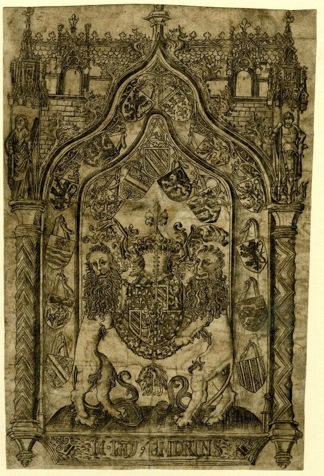
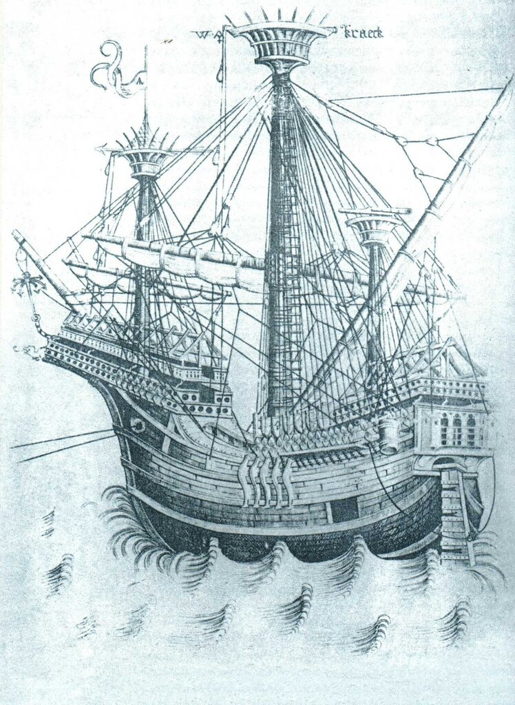
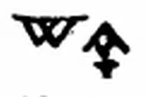
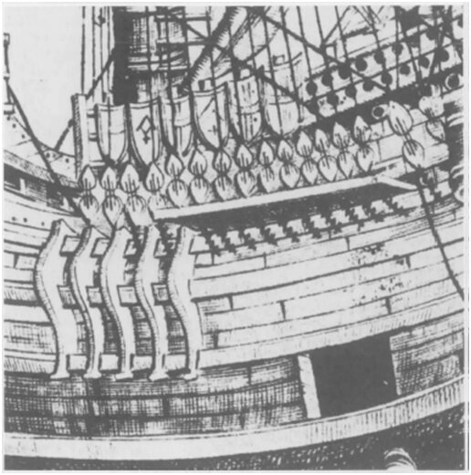
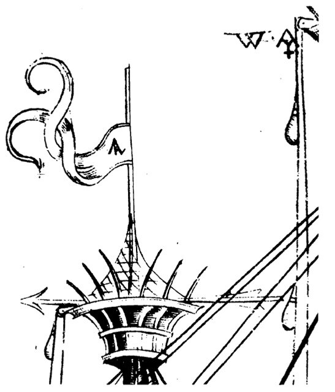
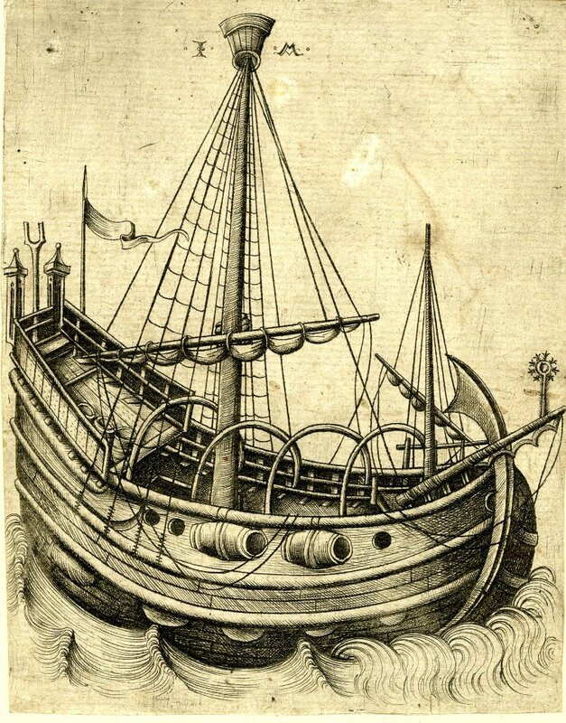

Но не всё так однозначно, поэтому не будем спешить с выводами. А чтобы поглубже войти в тему, познакомимся с одной занимательной историей, связанной с едва ли не первым детальным изображением каракки в западноевропейском искусстве.
Летом 1468 года состоялось бракосочетание герцога Бургундии Карла Смелого с сестрой короля Англии Эдуарда IV Маргаритой Йоркской.

Оттиск с гравюры с изображением герба Карла Смелого. Британский музей
О размахе, широте и пышности этой бургундской свадьбы написано много. Можно посмотреть, например, в книге Прокофьевой и Скуратовской «100 великих свадеб» (2012 г.), или в прекрасно иллюстрированном рассказе коллеги по ЖЖ, одного из авторов этой книги Марьяны (
 eregwen) Скуратовской.
eregwen) Скуратовской.Мы, естественно, остановимся на сугубо морском аспекте этого события, подробно осветив ту часть повествования, которая отмечена в упомянутой книге несколькими фразами:
Посередине зала стоял бассейн, украшенный серебром, и изображавший озеро. По нему плавали тридцать расписанных и позолоченных кораблей, некоторые достигали двух метров в длину, и каждый представлял собой одну из земель герцогства. Они служили своеобразными блюдами, на которых подавали еду гостям. На больших кораблях было жареное мясо, а маленькие кораблики несли груз в виде лимонов, экзотических фруктов и оливок. Из фонтанов били вино и розовая вода. На сладкое кондитеры подали искусно сделанные из сдобного теста замки.
Сохранилось много описаний этого банкета в мемуарах его участников, а также в записках Fastre Hollet , «главного бухгалтера» ('Contreroleur de la despense ordinaire de 1'ostel ') герцога Карла Бургундского.
Всего на протяжении восьмидневных свадебных торжеств было шесть больших банкетов. Hollet пишет, что для первого торжественного обеда (bancquet du soupper) было изготовлено из дуба высшего качества (waghescot) тридцать моделей кораблей типа каракк (à façon de karracques), которые имели в длину семь футов и пропорциональную этому размеру высоту. Корабли были оснащены по всем правилам морского искусства, имели три мачты, на верхней части которых размещались марсы. Весь такелаж был основан как подобает, были подняты паруса, имелись якоря. Все мачты, снасти, украшения носовой и кормовой надстроек были позолочены, а сами надстройки покрыты лазуритом. Борта кораблей были выкрашены в черный цвет, головки нагелей, крепивших обшивку, - позолочены. Корабли омывались серебряными морскими волнами, покрытыми шелковой вуалью (плавать в бассейне такие корабли, конечно, не могли), на грот-марсе были подняты шелковый штандарт герцога с вышитым на нем девизом je l'ay emprins, а также другие флаги и вымпелы Бургундии. Каждый корабль находился на подставке длиной 5 футов с выступающими из морских глубин скалами, поросшими травой, морскими чудовищами и рыбами. При каждом из 30 кораблей было по 4 шлюпки с золочеными веслами, изображениями гребцов и солдат: в шлюпках размещались лимоны, каперсы, оливки и другие приправы к большим кускам ростбифа, размещенным на больших моделях.
Как видим, описание в упомянутой в начале поста книге довольно близко к мемуарам бургундского счетовода. И приведено оно лишь из нашего любопытства к обычаям людей далеких эпох. А теперь обратимся к другой, более существенной для нашего рассказа, стороне этого праздника.
С бургундской свадьбой, как полагают, связана и первая дошедшая до нас гравюра с изображением большого парусного корабля.

Фламандская каракка (kraeсk, kraek). (Гравюра Мастера W с ключом)
Имя гравера до последнего времени оставалось неизвестным и скрывалось, под условным псевдонимом «Мастер W с ключом». Основанием для такого псевдонима послужила монограмма, вырезанная на гравюрах:

Монограмма «Мастер W с ключом»
Всего известно около девяти десятков гравюр, помеченных этой монограммой, из них – 9 гравюр парусных кораблей. Датируются эти работы периодом от 1465 по 1490 гг. Датировка гравюры с изображением каракки доставила исследователям множество затруднений. Основной версией являлось предположение, что гравюра была исполнена мастером по заказу Карла Смелого ко дню свадьбы с Маргаритой и представляла собой пособие для мастеров, делающих модели-подносы для торжественного обеда. Мастер W действительно мог находиться в Брюгге в момент свадьбы и мог входить в группу художников, готовящих это торжество. В подтверждение этой гипотезы приводили гравюру с изображением герба Карла Бургундского в обрамлении гербов подвластных ему земель, показанную в начале поста, которая, как полагали, тоже сделана к бургундской свадьбе. Однако последние исследования не позволяют достоверно датировать это изображение, оставляя лишь один довод – оно появилось до 1472 года. Большую работу в архивах для уточнения даты появления интересующего нас изображения каракки и выяснения имени художника провел André Wegener Sleeswyk (The Mariner's Mirror, 76:4, 1990, стр.345-361). Он искал в реестрах мастеров второй половины XV века в Брюгге и других нидерландских центрах, в которых находились гильдии художников, лиц, имеющих инициалы WA или AW. Однако удовлетворительных результатов этот поиск не дал. Тогда исследователь вновь обратился к самой гравюре. Он обратил внимание на шесть щитов, расположенных над ограждением борта каракки:

Фламандская каракка (kraeck), деталь.
Гербы, изображенные на трех из этих щитов представляли собой обычный большой крест, на одном из щитов была изображена монограмма мастера, на одном – шеврон с маленьким крестом внизу и на одном – большой крест с точками в центре каждой четверти. Сравнение этих фигур с изображениями гербов в капитальных фолиантах (de Renesse, Dictionaire des Figures Héraldiques (1897-1903) и Rietstap, Armorial Général (1926)) позволило прийти к выводу, что фамилия мастера W с ключом могла звучать как 'Vercruyssen', 'vanden Cruce' ,'Kruys' или 'Croix', происходивших из одного местечка 'Kruis' (по-русски «Крест»). Фамилия 'vanden Cruce' несколько раз встречается в списках гильдии золотых дел мастеров, так что осталось только установить христианское имя нашего мастера. Инициалу W из всех кандидатов соответствует лишь 'CRUCE (VAN DEN), Willem, filius Gillis', родившийся в 'Curtrycke' (Кортрейк в Западной Фландрии). Путем дальнейших рассуждений Sleeswyk приходит к выводу, что автор гравюры некто Willem Colleman, который после прибытия по приглашению герцога для подготовки торжеств в Брюгге стал называть себя 'vanden Cruce' – «прибывший из Крюйса», что и стало его латинизированным художественным псевдонимом - Willem a Cruce, WA. Однако стоит добавить, что гравер WA не был автором изображения. Каракка выполнена по эскизу некоего Pieter van Aerde, который использовал свою номограмму 'PvA', размещенную на вымпеле каракки:

Подобно многим художникам-граверам пятнадцатого века, WA по профессии был ювелиром, золотых дел мастером, поэтому многие его работы – это заготовки, модели для мастеров его профессии. Поэтому мы видим повторение его сюжетов у многих современных ему художников, в частности у плодовитого мастера Исраэля ван Мекенема ( Israhel van Meckenem, 1450-1503). На приведенной ниже гравюре размещена монограмма ван Мекенема (IM), хотя это всего лишь зеркально отраженное повторение одной из гравюр Мастера WA.

Видимо, по причине неразберихи в авторстве изображений парусных кораблей той эпохи, немецкая википедия относит гравюру Мастера WA к работам ван Мекенема.

Гравюра Мастера М с ключом.
Известный прием: старые художники часто использовали имена знаменитых современников, чтобы увеличить продажу своей продукции. И по сей день это практикуется в среде работников кисти и резца.
Остановимся пока здесь, чтобы следующий пост начать с изучения конструктивных особенностей каракки.